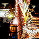
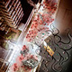
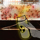
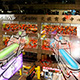

Light-off Mongkok Operation
| Light-off Mongkok Operation 旺角強制熄燈行動 / 2009 / Lambda Print 能達翩 60" x 60" Direct Link: http://wesley.com.hk/artist/lightOff.html | |
|  | |
|  | |
|  | |
|  | |
Artist Statement 創作自述:
This is an earlier work of my Mongkok light &sound pollution project that inspired by the strong acid attack incident happens here. As I mentioned in the artist statement of "The Lucifer Effect, Mongkok", the incident was possibly triggered by the poor living environment here.
In this work, I was trying to let people realize that, by this poor environment you and me created, someone up there may be imagining to do or even going to do something on us for an revenge.
這是我較早期關於旺角光和噪音污染的作品，靈感來自發生在這裡的鏹襲事件。 正如我在"旺角路西法效應"的創作自述中提到，事件很可能由這裡惡劣的生活環境引發的。
在這作品中，我試圖讓人們意識到，這個你我一起創做的惡劣的環境中，很可能有人在我們的頭上，正在想像甚至打算做一些事情對我們報復。
Bibliography 參考書目:
HO, Ding Bong, “Diagnosing Suicide“ Arcadia Press Ltd, Hong Kong, 2008
MCANDREW, Francis T., “Environmental Psychology”Brooks/Cole Pub Co, Phoenix, AZ, U.S.A, 1992
OSAMU, Nakata, “Criminal Psychology”The Buffalo Book Co., Taiwan, 2000
SHNEIDMAN, Edwin S., “Autopsy of a Suicidal Mind” Oxford University Press, New York, 2004
YANG, Sulung, “Criminal Psychology”Wu-Nan Book Inc., Taiwan, 2006
| Media Coverage 傳媒報導: | ||||||
| 01/04/2011 | New Monday | 新Monday | 光污染升級襲香港 | |||
| 28/03/2011 | now TV | now寬頻電視 | 關注香港光污染 | |||
| 21/03/2011 | Weekend Weekly | 新假期 | 熄燈吧! | |||
| 14/03/2011 | South China Morning Post | 南華早報 | Lights, cameras, action... artist fights street glare | |||
| MingPao | 明報 | 藝術家YouTube片控訴旺角光污染 | ||||
| Oriental Daily | 東方日報 | 藝院生無言控訴光污染 | ||||
| The Sun Daily | 太陽報 | 萬張相片控訴旺角光污染擾民 | ||||
| onTV | 東方電視 | 藝院生攝6000張相製短片控訴光污染 | ||||
| Sing Tao Daily | 星島日報 | 藝術相片影片控訴旺角光污染 | ||||
| Apple Daily | 蘋果日報 | 隔牆有耳：旺角光污染 光到人都癲 | ||||
| Hong Kong Economic Times | 經濟日報 | 旺角光污染滋擾 住客：似瞓街 | ||||
| Wen Wei Po | 文匯報 | 立法規管光污染 框架月內公布 | ||||
| ||||||